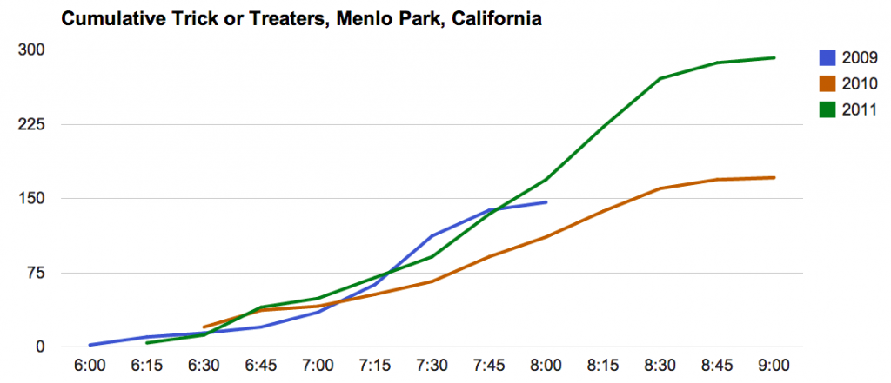

Halloween Candy Data
Update with actuals from Halloween 2012: It was a banner year.

You may be giving out candy later today. What can you expect? Let's look at some data. This post summarizes the past three Halloweens.

As you can see we live in a pretty popular neighborhood. Each year has its own story.
- 2009 - our first year in our new neighborhood. We had no idea that this was such a popular trick-or-treating spot. I ran out of candy at 8:00, turned out the lights, and hid in the back of the house. Shameful.
- 2010 - a fine year. No complaints.
- 2011 - we moved to a new house just around the corner. I figured the quieter street would mean fewer kids -- not so! What I didn't appreciate was the attractive power of my next door neighbor's insane decorations. Luckily my wife came back with emergency supplies just in time.
And how busy do things get? Darn busy.

During the busiest 15 minute period last year I was serving a kid every twenty seconds or so. When bursting this is close to my max current candy-dispensing throughput.
If you come by my house this year you'll see me again, handing out candy with one hand and scribbling hash marks with the other. I'll update the data in my public spreadsheet.
Comments
Comments powered by Disqus